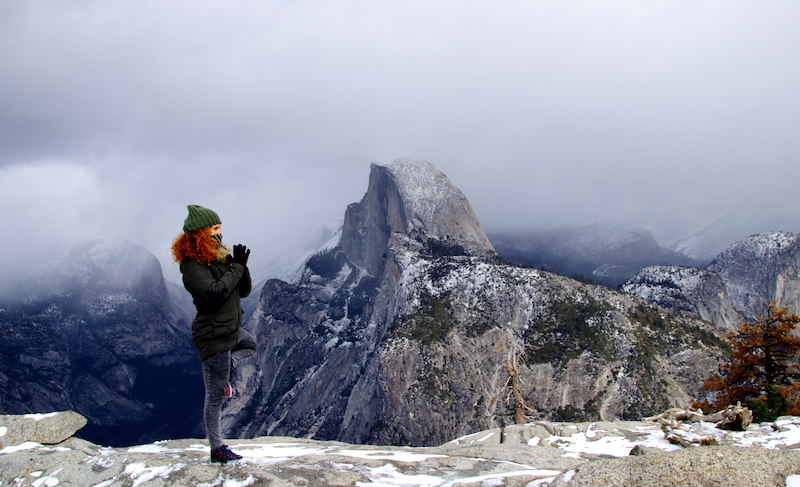
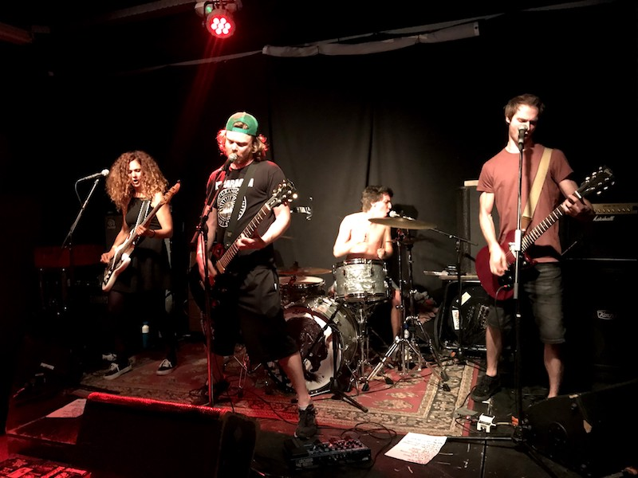
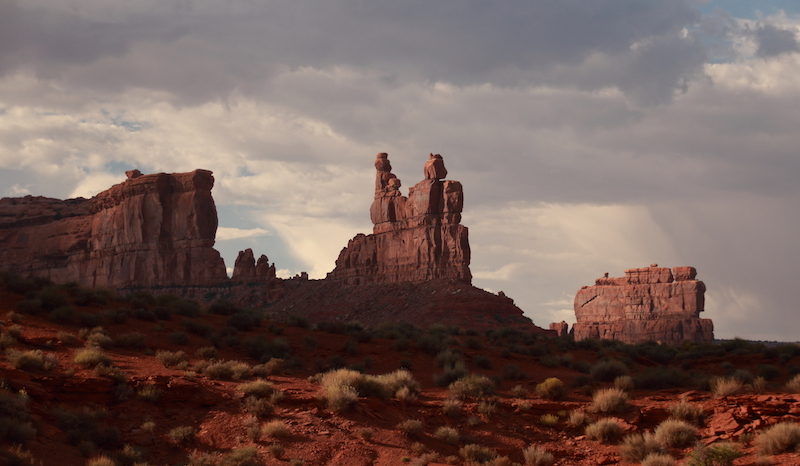

Part-time yogi codes
|  | NatureWhen I don't sit behind the computer, I love to be outside, hiking, watching wildlife, do yoga or run. One of the nicest hikes I did was the Glacier Point hike in Yosemite Park earlier this year. |
|  | MusicThe song "Ruby Soho" by Rancid inspired me in many ways. One is the Le Wagon coding bootcamp, the other one is punkrock as I play the bass guitar in the band called Maybe Not. It's my other favorite stress releasing therapy after doing yoga and coding, of course. If you wanna see us live, you have a chance now: 27th October at Volta. |
|  | PhotographyTravelling and taking beautiful photos come hand in hand for me. During my self-study of coding, I encountered the unsplash website, where I submitted one of my travel photos. This photo has over 4 million views and counting. Unsplash is a cool source for beautiful hi-res photos. |